Laurie Tumer, an artist based in Santa Fe, N.M., makes remarkable images that illustrate the pervasiveness of pesticides in our environment, in particular how surprisingly far they travel from their points of origin. Tumer’s shocking pictures - from the collection “Glowing Evidence” - engage viewers in a physical way, requiring them to move with the image in order to perceive the path of the toxin. Internet viewers share a similar experience through arresting animations.
When I first came across one of Laurie Tumer’s photographic animations on the Web - while researching farm workers and pesticide exposure for a Mother Earth News article - I was immediately struck by the beauty of her images: a pair of deep red lips bathed in stars; eerie glowing hands that appear to have been dipped in some mysterious pixie dust. But beauty is in the eye of the beholder, and once I understood what these magnificent images were, I realized the beauty was something horrible. Even though I’ve read Rachel Carson's Silent Spring - the most famous and classic book about the impact of pesticides - I knew that I had never understood the danger of these ubiquitous poisons quite so acutely.
A conversation with the artist revealed that her interest in pesticide exposure is frighteningly personal and her creations are the product of an innovative and thoughtful process.
Q. How did you become aware of pesticide problems, and what made you want to work to educate others about it?
In 1998, I experienced a pesticide poisoning after my home was sprayed by a company that misleadingly advertised using “organic” pest products (and still does). What they actually used was a synthetic pyrethroid insecticide, a chemical widely used in agriculture and in home applications. My face swelled, I was sweaty, my heart slowed, and I felt something between a severe flu and what I’ve read malaria feels like. It took many months for the acute reactions to lessen and the experience has caused me health problems to this day. This type of poisoning, I learned, is more widespread than I knew.
In ‘98, I thought of myself as environmentally aware - I was eating organic food and obviously wanted organic pest control - but this pesticide experience caused me to deepen my knowledge about pesticides and the industry. While convalescing I reread Silent Spring (available through the Mother Earth News online store), and wondered why there is a greater proliferation of broad-spectrum insecticides, even though this seminal work had already laid out the cautionary tale in the 1960s. As I read more on the subject, I wanted to see pictures. When I found none that satisfied my visual curiosity, I began to explore ways to make my own, to photographically illustrate what was difficult to imagine: the ubiquity of pesticides and other invisible contaminants.
I didn’t necessarily set out to educate others. I was trying to grasp information, and my impulse was that I needed to visualize this information. I also began to wonder: might one reason that Carson was not fully heeded be that the invisible has not been visualized as poignantly as it has been written about?
Q. Tell me about your pesticide exposure artwork. What are the images meant to convey?
The images are meant to visualize what is invisible. I found a muse in the environmental scientist Richard Fenske, borrowing a training technique he developed that provides surprising pictures to farm workers who use pesticides, revealing their exposure in spite of wearing protective gear. This technique, used worldwide, helps workers understand how pesticides travel and persist on their skin and clothing. The demonstration is an effective tool to motivate them to adhere to rigorous clean-up procedures when they return home after working with pesticides.
The technique uses fluorescent tracer dyes and UV light and produces pictures that appear as constellations charting the chemical’s movement and settling, all becoming a dazzling theatrical spectacle under this UV light. As an art photographer, I saw an ‘art aura’ in Dr. Fenske’s images. Also, for me they poignantly expressed in visual terms a personal and collective narrative about our environmental predicament.
With support from Dr. Fenske and his colleagues, I learned to apply this technique closer to home, where the same chemicals used in agriculture are regularly used in stores and schools, where they are brought home on our food and shoes and in the fibers of our clothes. I wanted to see them on the exteriors of our homes, in our blood, and in the interiors of our fat cells, to more fully understand their serious health and environmental consequences and express my own response to all this madness.
Q. How accurately does your work depict what happens with real pesticides?
These dyes are whitening agents used in everything from laundry detergents to shoelaces and toilet papers. These same whitening agents are used in other science-based studies and training demonstrations to help visualize the movement of chemicals. For example, they are used to track bird migrations and in demonstrations to show those who work with electronics how easy it is to contaminate the parts they assemble.
What we’re seeing in the images, whether the dyes are mixed with pesticides or water, are the dyes, not the pesticides. However, it is a fairly accurate depiction. Theoretically if we could see the pesticides, this is what they would look like. Pesticides are colorless substances in so-called inert ingredients, not only to encapsulate them, but also to intensify their effect. These inert ingredients (often called “trade secrets” by manufacturers to avoid divulging what they are), in many cases are more toxic than the pesticides themselves, as they form a kind of chemical stew with the pesticides.
In some ways, I consider these images photographic art illustrations. I recently saw beautiful drawings done in the 1950s of the ocean floor. They made a body of knowledge visible and this inspired more sophisticated technologies to map the ocean floor. I think of these pesticide images in that way. We still do not have technology to map the migration and settling of pesticides in the environment and the body, but we are curious creatures who thirst to know and that thirst to know is, in my opinion, tied to our instinct for survival.
Q. Can you explain the process you use to create these images?
I apply the fluorescent tracer, which are powders that I often mix with water just as they are applied in the farm worker demonstrations, illuminating subjects either in complete darkness or in ambient light. The tracer dyes are messy to work with, much finer than flour or dust. I wear a mask. I use portable UV lamps and UV goggles, then photograph what I see.
I print these “static photographs,” but this series took an interesting turn in 2003 when I looked for a medium that was not static so I could show the visible and invisible in the same frame. I felt that the medium of photography didn’t sufficiently disturb the notion that the issue was one left in the past. I was looking for a visual immediacy. That led me to making lenticular photographs (a term often confused with holography); these are photographs that animate - you know those novelty postcards where one image turns or morphs into another? I learned to make these much, much larger than postcards; they animate not in the hand, but as a person moves around them on a wall. To see a virtual animation, visit www.laurietumer.com.
Q. What kinds of people come to see your artwork? Do you ever think that you’re preaching to the choir?
I originally made these images for an art audience and continue to do so. I show them in museum and gallery venues. However, over the years the audience has unexpectedly widened as environmentalists, organic farmers, physicians, scientists, eco-fashion advocates and anti-pesticide activists regularly contact me. I am asked to speak about this series and write about it to audiences beyond the art world. Requests come to use certain images as illustrations in books and magazines, and for fund-raising events. Different kinds of people are interested in them. For example, one physician used the images in training rural physicians to help them recognize and understand pesticide poisoning in children. In the past few years, my work has been shown and written about in Chinese art photography magazines. The subject of pesticides was news to the critics and editors I have worked with in China, and using the subject in art is particularly surprising to them - so no choir there!
However, some audiences - particularly organic growers, environmentalists and scientists working with pesticide issues - immediately understand the references in my imagery and respond enthusiastically. In fact, they provide me with new information, which they say begs for visualizations.
Generally though, the images require more explanation that you would expect. The art audience requires the most explanation. So, no, I don’t feel I’m preaching to the choir. Though the photographs tell a cautionary tale, it is oddly one that is not as widely understood as your readers would think, even with more and more attention given to ‘green’ this and ‘green’ that.
I am obviously pleased by how my visual curiosities have been received and have become useful to people. However, my reason for continuing the project always comes down to this: I am compelled by what I see after applying these fluorescent tracer dyes in darkened rooms, and in the corners of my garden, and on common objects under UV lamps. These objects suddenly become the stunning galaxy of chemical particles they are - that we all are. Then, just as I am reveling in this mystery and awe, I find I am also looking squarely at that which threatens our very existence. Rachel Carson the great has said that both realities must be seen clearly for us to survive.
Q. How do audiences typically react to these images?
Audiences generally react to the images as I react to them as I photograph in the dark and as the farm workers react to them in the training demonstrations: first there is a kind of confusion about what is being seen; then amusement because they often look weird and sometimes creepy; then awe because of the dazzling spectacle of constellations that can be strangely beautiful; and then there is this feeling of being completely sobered when you realize what they are about.
With the lenticular images, viewers dance before the photographs on the wall to see them animate, amused and physically engaged, inspecting them far longer than they would look at an ordinary photograph. This makes sense since detecting motion is our innate visual priority, designed to alert us of danger.
The lenticular medium also incorporates elements that imitate an interesting aspect of the farmer demonstration: a sense of fun used to engage a serious subject. Using this photographic medium, the images are accessible to many audiences, alluring and unsettling while subverting the technology’s familiar use as a novelty item or advertising gimmick. This series has inspired an interest in merging “vernacular” and “fine” art, and exploring new approaches to the art photograph as the medium becomes ever more democratized.
Q. Where can Mother Earth News readers see your work?
My work can be seen at Photo-Eye Gallery in Santa Fe, New Mexico or virtually at my Web site.
|
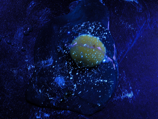 LAURIE TUMER/COURTESY PHOTO-EYE GALLERY An egg from "Glowing Evidence," a series of lenticular photographs by Laurie Tumer. |
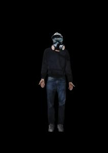 LAURIE TUMER/COURTESY PHOTO-EYE GALLERY Tumer's images employ the medium of lenticular photography, in which viewers in the gallery must move with the image in order to perceive the path of the toxin (like novelty postcards). Internet viewers can enjoy a similar experience through animation. |
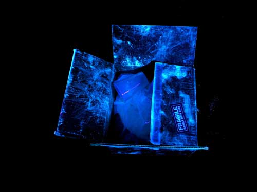 LAURIE TUMER/COURTESY PHOTO-EYE GALLERY From "Glowing Evidence," a series of lenticular photographs by Laurie Tumer. |
|
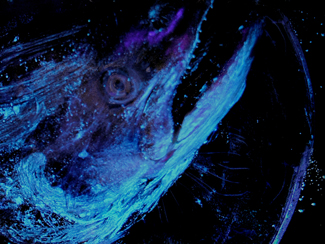 LAURIE TUMER/COURTESY PHOTO-EYE GALLERY From "Glowing Evidence," a series of lenticular photographs by Laurie Tumer. |
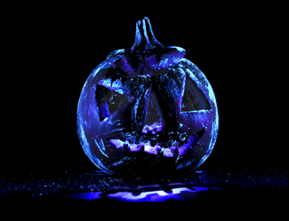 LAURIE TUMER/COURTESY PHOTO-EYE GALLERY From "Glowing Evidence," a series of lenticular photographs by Laurie Tumer. |
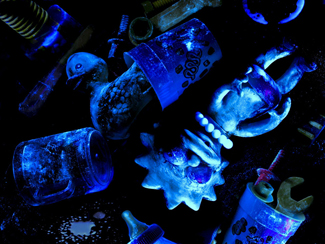 LAURIE TUMER/COURTESY PHOTO-EYE GALLERY From "Glowing Evidence," a series of lenticular photographs by Laurie Tumer. |
|
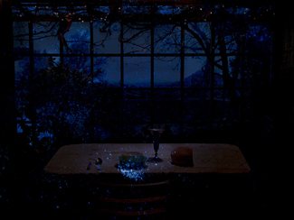 LAURIE TUMER/COURTESY PHOTO-EYE GALLERY From "Glowing Evidence," a series of lenticular photographs by Laurie Tumer. |
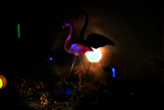 LAURIE TUMER/COURTESY PHOTO-EYE GALLERY From "Glowing Evidence," a series of lenticular photographs by Laurie Tumer. |
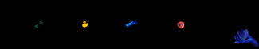 LAURIE TUMER/COURTESY PHOTO-EYE GALLERY From "Glowing Evidence," a series of lenticular photographs by Laurie Tumer. |
|
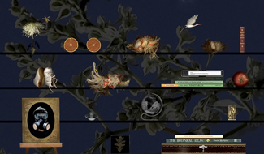 LAURIE TUMER/COURTESY PHOTO-EYE GALLERY From "Glowing Evidence," a series of lenticular photographs by Laurie Tumer. |
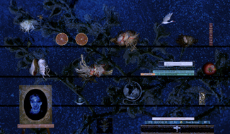 LAURIE TUMER/COURTESY PHOTO-EYE GALLERY From "Glowing Evidence," a series of lenticular photographs by Laurie Tumer. |
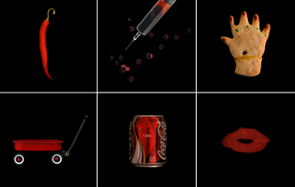 LAURIE TUMER/COURTESY PHOTO-EYE GALLERY From "Glowing Evidence," a series of lenticular photographs by Laurie Tumer. |
|
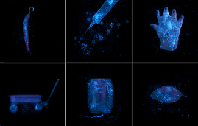 LAURIE TUMER/COURTESY PHOTO-EYE GALLERY From "Glowing Evidence," a series of lenticular photographs by Laurie Tumer. |
|
|